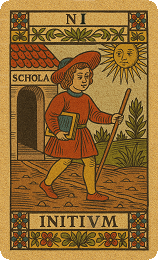
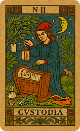
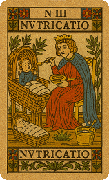

おはなし生成“3アクト法”フラクタルスプレッド
運動会の競技の簡単なおはなし意味づけなら、運動会種目生成おはなし“3アクト法”がおすすめです。
【用途】保育園・幼稚園などの「お話」の骨格作りに。劇遊びの物語、避難訓練や生活習慣のルールや教訓を分かりやすく伝える場面用のお話作りに。運動会競技や誕生会などのテーマのお話作り…などなど。
【特徴】
- 難しそうに見えますが、幼児向けのおはなしが生成されます。
- 物語とは変化であり、ベクトル、位相を活かし、3枚カードの差分ベクトルを物語のエンジンにする設計。ベクトル値を「物語の曲がり具合」や「エネルギーの変化」に変換し、計5シーン構成。
- 一貫性: 始まりと終わりのつながり、緊張度: 全体のドラマばらつき2軸から、お話を4つに分類。物語の曲線を変え、シーン補間を調整。
【最小動作】…黄色の印のおはなしタイプ・用途・特徴・どれか1つ・生成ボタンでプロンプト生成。）
>>> さらに説明を開く
おはなしタイプを選んでください。



1. 現状
2. 障害
3. 顕在意識
大きなメリット
- 数値をベースにすることでAIを賢く制御し、ハルシネーションを防止しながら、専門的な考察に基づいた回答が可能
- AIが内部で計算するようなことを、ある程度事前に済ませておき、参考になる数値パーケージのプロンプトをAIに渡せば、AIの負担が減り、その分、ナラティブ生成に力を注げます。
- AIの内部計算はAI自身でも説明が困難ですが、こちらで計算し数値を指定すると、「なぜその出力なのか」の根拠（エビデンス）が明確であるメリットがあります。15次元のベクトルの数値で持っているため、「そういう文章を学習してきたから」「なんとなく」ではなく論理的な裏付けがなされます。
- さらに詳しく、計算論的AI制御の13のメリットをブログにまとめました。
保育アイデアAI生成に保育タロットを使う13のメリット - 直接 vs 象徴
下にいろいろ情報や数値が出てきますが、見なくても、おはなし生成に支障ありません。
プロンプト：
★ChatGPT、Claude(クロード)、Google Gemini、perplexity、他に、リンクは貼れませんが、X(旧ツイッター)のGrok、Microsoft Copilot(コパイロット) 、でも動作します。
※Google検索のAIモードでは動作しませんでした。